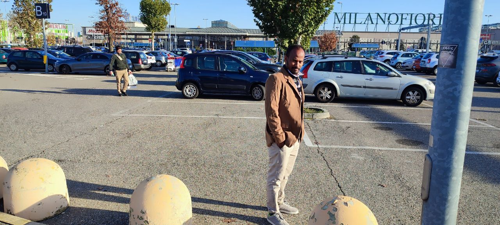
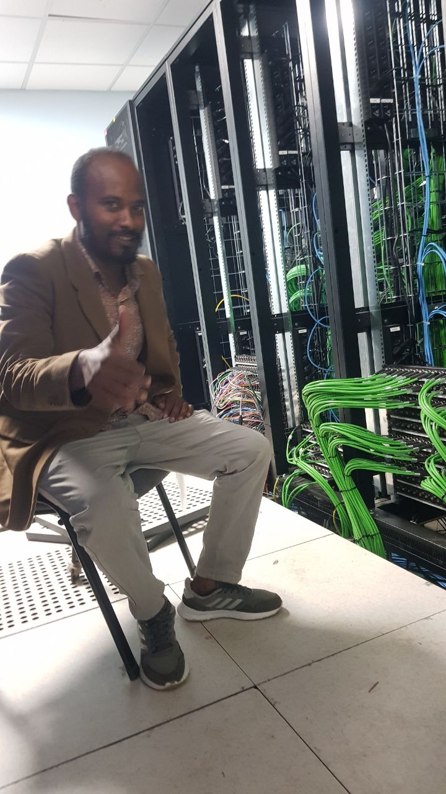

|  | Milano Fiori exceptional view Milano is found in itali milan Milan is business center as well as a second capital city next to room Milan's climate is similar to Ethio's climate In milan every worker are adicted to their job Milan is so attractive city |
Router Confugration Room at ENA Router confugration Specifies the correct IP addresses Route settings Host configuration Sets up a network connection on a host computer Laptop by logging the default network settings, Such as IP addressing, Proxy, network name and ID/password To enable network connection and communication. |  |
Training On Broadcast Control Room at Milan Broadcast control room A broadcast control room is a centralized hub Where professionals, including producers, directors/switchers As well as camera shaders, and audio engineers work together to manage and produce a live broadcast. |